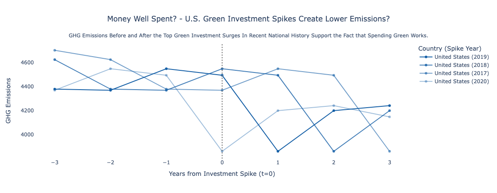
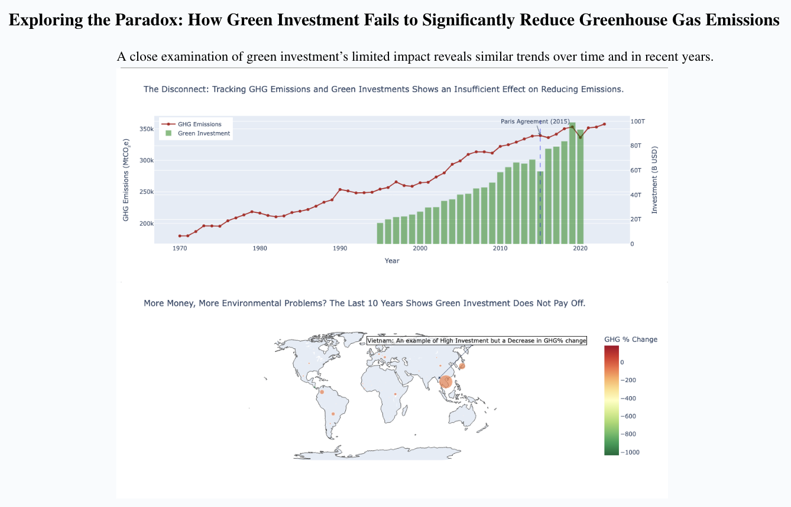

Proposition: Environmental investment has a significant effect on reducing greenhouse gas emissions.
FOR the Proposition

Design Decisions and Rationale:
- Aggregation: The main dataset consisted of a merge between several different dataframes from the IMF Climate Change Indicators database: GHG by nation, and the components which comprise “green investment”: Renewable Energy, Green Bonds, Environmental Taxes, and Low Carbon Trade. The dataset is first sorted by country and year, followed by calculating the year-over-year (YoY) percentage change in green investment. Spike years are identified when the YoY change exceeds 1.5× the previous value. The top 5 investment spikes are selected by investment amount per country. For each of these spikes, a 7-year window (3 years before, the spike year, and 3 years after) of GHG emissions data is extracted. The GHG emissions drop is calculated between the start and end of this window, and the top 4 countries with the largest GHG emission drop are selected for visualization.
- Design Choice – Displaying Emissions from -3 to +3 Years Around Spike:
Earnestness Score: 2
By centering the timeline around the year of investment (t = 0) and showing three years both before and after, this visualization provides a balanced temporal context. It lets the viewer decide whether investment spikes correlate with emission reduction, without focusing only on the spike year. Providing the context and aftermath helps convey the before-and-after effect that is crucial to evaluating cause and effect between these variables. The three-year window is consistent, so cherry-picking is avoided. This time window works well because it is short enough to isolate local effects and long enough to observe potential lagging outcomes. At times, it doesn’t show a straight decline, which can be attested to by overlapping years of investment spikes and other events occurring during these years, such as COVID-19. I considered alternative windows of 5 or 7 years, but making the windows longer introduced more noise into the data and made it harder to draw a conclusion supporting the proposition from this visualization. - Design Choice – Selecting Top 4 Spikes Based on Largest Emission Drop:
Earnestness Score: 1
The goal was to identify the clearest examples where green investment might have led to emission reductions. By sorting on the absolute emission drop from t = -3 to t = +3, this design prioritizes real-world impact instead of simply selecting the biggest investments or most recent years. This creates a more persuasive argument by aligning financial spikes with measurable environmental change. It does introduce some confirmation bias, but the selection method is transparent and replicable. The focus on the United States was also primarily done to illustrate bigger drop-offs, as other countries had smaller levels of investment. Selecting the U.S allowed for a more visually appealing image. Some things that may not work with this choice are that viewers may be misled into believing these four cases are representative instead of selected cases. I considered selecting random countries and choosing countries based on investment size to spike, but adding multiple countries ruined the vision for the plot, and it was hard to discern any pattern at all. - Design Choice – Using a Single Color with Varying Opacity to Encode Importance:
Earnestness Score: 1.5
Using one color across all lines and only altering opacity allows for the chart to maintain a minimalist aesthetic while still indicating relative visual importance. Higher opacity signals greater emission reduction and more important spike years. This approach prevents the viewer from being overwhelmed with multiple colors for different years and retains the focus on the plot content alone. This design choice may backfire as lower colored opacity lines could be harder to see for some, depending on the display choice. I considered a distinct color for each line, but ruled it out because it didn’t fit my narrative of only having one country with different years; it conveyed the fact that there were multiple different countries, which was not the case. - Design Choice – Vertical Line for Context:
Earnestness Score: 2
A vertical line at t=0 is used to mark the investment spike year. This design choice effectively anchors the timeline, making it clear where the spike occurred and aiding the viewer in understanding the temporal relationship between investment and emissions changes. To understand this visualization, the audience must know what year the spike occurred in, and by solidifying this point via the annotation, the audience can understand where the origin of the plot is. This visual cue adds temporal clarity, ensuring the focus remains on the comparison of emissions before and after the spike event.
AGAINST the Proposition

Design Decisions and Rationale:
- Aggregation: The main dataset consisted of a merge between several different dataframes from the IMF Climate Change Indicators database: GHG by nation, and the components which comprise “green investment”: Renewable Energy, Green Bonds, Environmental Taxes, and Low Carbon Trade. The dataset was filtered by indicator type to separately extract GHG emissions and green investment data. Total annual values were computed using by grouping by year and and summing the resulting data for the time series visualization. For the bubble map, GHG percent change per country from 2013 onward was calculated using the first and last yearly values, while total investment was summed per country, followed by a merge on country-level data for integrated analysis.
- Design Choice – Using a Dual-Axis Chart to Compare GHG Emissions and Green Investments:
Earnestness Score: 1.5
A dual-axis chart allows two datasets with different units—GHG emissions and green investment—to be visualized together without having to plot them on two different scales. GHG emissions are shown as a continuous trend, a line, while investment is displayed as bars to emphasize the difference on scale. This design lets the viewer observe whether peaks in investment coincide with dips in emissions. Supporting two trend comparisons on one plot worked quite well. I think that it can also be quite confusing with the way Plotly displays the grid lines, as observing that the scales are different can happen. It also plays into the fact that the relationships displayed may be stronger than they truly are. I considered normalizing both series to index values or plotting them in separate subplots, but those options lost the immediate juxtaposition between variables. - Design Choice – Emphasizing the Paris Agreement via Vertical Line and Annotation:
Earnestness Score: 2
Adding a vertical dashed line for 2015 and annotating it as the year of the Paris Agreement creates context for interpreting policy shifts. It suggests a point at which global intentions solidified and asks viewers to consider whether investment and emissions responded afterward, which should be conveyed by the bars for green investment. This subtle but powerful cue helps viewers orient the timeline. What may not work about this is that a single line may oversimplify the complex rollout and lag effects of international agreements. I considered including other milestones, such as COVID-19, but none had as much of a visual impact as the Paris Agreement did. It also retains the most relevance to the topic being discussed. - Design Choice – Encoding GHG % Change as Color and Total Investment as Bubble Size
:
Earnestness Score: 2
Using color to show emissions change and size to represent investment creates a multidimensional view of performance by country. The diverging color scale from red to green immediately conveys good vs. bad emissions outcomes. Countries with high investment but poor emissions trends (like Vietnam, which is annotated) visually stand out. This pairing helps test the narrative that investment doesn’t guarantee results. Intuitively encoding this relationship works well in allowing the viewer to come to the conclusion that the proposition is flawed. Using a global plot may create confusion, however, as they can distort interpretation due to varying country sizes and potential overplotting in dense regions. I considered using a scatter plot instead, but having the global view allows for a more reasoned view of which countries had larger investments. - Design Choice - Choosing to Plot the Last 10 Years:
Earnestness Score: -1
This choice was deceptive by nature, specifically because choosing different ranges did not play into a strong enough plot. I wanted to ensure the plot showed up as a more red-focused representation, and played with the years to make sure I got this result. This was done to ensure the viewer agreed with my negating claim on the proposition. It works well to do this, but it can be a proble, as spanning 10 years was clearly not representative. I tried multiple different years, such as 2, 5, and even keeping the same range, but ended up sticking with the one that matched the negating vision best and changing the title/subtitle to reflect this.
Final Reflection
The design of the time series plot and bubble map was an iterative process that necessitated a balance between clarity, context, and persuasion. The dual-axis chart proved to be a relatively straightforward representation of the data once it was determined that emissions and investment would serve as the primary variables for comparison. The primary challenge was ensuring that the axes were sufficiently clear and that the dual-axis design did not overwhelm the viewer. The annotation and line for the Paris Agreement provided a clear focal point as to where I wanted the reader’s focus to be. A similar challenge was posed by the bubble map in terms of encoding information. This map required both the color (GHG% % change) and size (investment) to be visible but not misleading. The challenge of achieving the optimal balance between complexity and simplicity in the narrative elements of titles and annotations was a primary issue I dealt with. Additionally, figuring out how to filter my data so that my spike chart appeared such that someone could understand it was a tiresome task, which ended with me reducing my scope to just the United States.
The most surprising aspect of the study was the profound impact of subtle design elements, including color selection, annotation wording, and the placement of milestone,s on how viewers would understand the data. It was evident that ethical analysis and visualization are not merely concerned with the accurate presentation of data; rather, they are also focused on fostering deliberate engagement with the data. It is necessary to be transparent about the limitations of the data, and I have learned that contextual framing (e.g., the title and annotations) plays a significant role in shaping data interpretation.
I would define ethical analysis and visualization to be the balance between informing your audience about your true intentions and displaying data in a visual format. I believe that there are ethical bounds when practicing data visualization, as it is incredibly easy to fabricate conclusions, especially when you are not providing the raw data to the viewer. Being transparent in titles, legends, and write-ups is important in being ethical with data visualization. The distinction between persuasive choices that are considered acceptable and those that are regarded as misleading depends on three factors: accuracy, transparency, and respect for nuance. Any design choice that distorts data to reach a predetermined conclusion can be considered misleading. The utilization of persuasive strategies may include emphasizing specific patterns of the data, but these practices mustn't be used to go against scientific process norms or integrable practices.